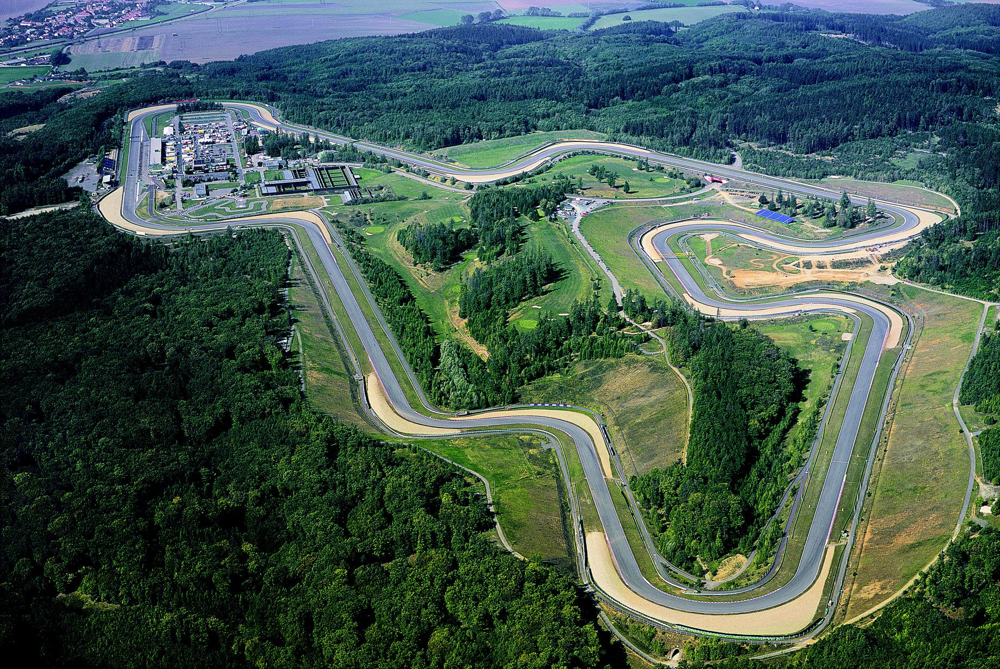
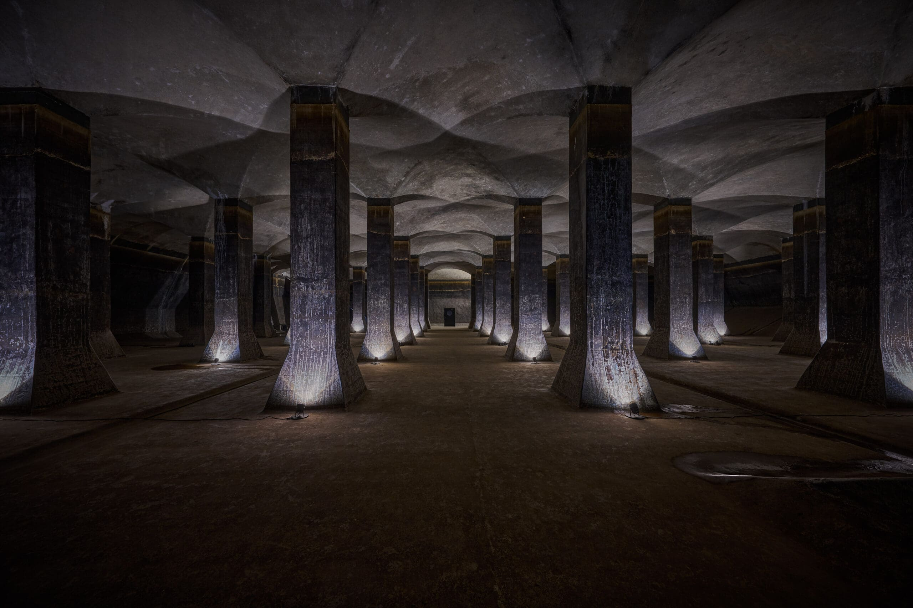

Touristenattraktionen
Brünner Staudamm
Der riesige Stausee am Stadtrand ist das beliebteste Naherholungsgebiet der Einwohner. Hier kann man im Sommer baden, Boote ausleihen, wandern oder eine Fahrt mit dem Schiff zur nahegelegenen Burg Veveří machen. Am Ufer gibt es viele gemütliche Kneipen und Strände.
 Mehr
Mehr
Autodrom Brno / Masaryk-Ring
Diese berühmte Motorsport-Rennstrecke liegt in einem Waldgebiet westlich der Stadt. Sie hat eine lange Tradition und ist weltweit bei Motorsport-Fans bekannt. Hier finden das ganze Jahr über spannende Auto- und Motorradrennen sowie Fahrtrainings statt.

MehrWasserspeicher Žlutý kopec
Diese riesigen, unterirdischen Wassertanks aus Backstein wirken wie eine verborgene, mystische Kathedrale unter der Erde. Sie wurden im 19. und 20. Jahrhundert gebaut, um die Stadt mit Wasser zu versorgen. Heute sind sie für Besucher geöffnet und ein absoluter Geheimtipp für faszinierende Fotos.

Mehr